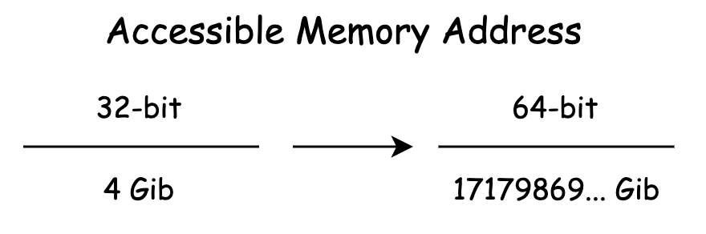

- 00 开篇词 我们为什么要了解 WebAssembly？.md.html
- 01 基础篇：学习此课程你需要了解哪些基础知识？.md.html
- 02 历史篇：为什么会有 WebAssembly 这样一门技术？.md.html
- 03 WebAssembly 是一门新的编程语言吗？.md.html
- 04 WebAssembly 模块的基本组成结构到底有多简单？.md.html
- 05 二进制编码：WebAssembly 微观世界的基本数据规则是什么？.md.html
- 06 WAT：如何让一个 WebAssembly 二进制模块的内容易于解读？.md.html
- 07 WASI：你听说过 WebAssembly 操作系统接口吗？.md.html
- 08 API：在 WebAssembly MVP 标准下你能做到哪些事？.md.html
- 09 WebAssembly 能够为 Web 前端框架赋能吗？.md.html
- 10 有哪些已经投入生产的 WebAssembly 真实案例？.md.html
- 11 WebAssembly 在物联网、多媒体与云技术方面有哪些创新实践？.md.html
- 12 有哪些优秀的 WebAssembly 编译器与运行时？.md.html
- 13 LLVM：如何将自定义的语言编译到 WebAssembly？.md.html
- 14 有哪些正在行进中的 WebAssembly Post-MVP 提案？.md.html
- 15 如何实现一个 WebAssembly 在线多媒体处理应用（一）？.md.html
- 16 如何实现一个 WebAssembly 在线多媒体处理应用（二）？.md.html
- 17 如何实现一个 WebAssembly 在线多媒体处理应用（三）？.md.html
- 18 如何进行 Wasm 应用的调试与分析？.md.html
- 19 如何应用 WASI 及其相关生态？.md.html
- 20 总结与答疑.md.html
- 结束语 WebAssembly，未来已来.md.html
- 捐赠
14 有哪些正在行进中的 WebAssembly Post-MVP 提案？
你好，我是于航。
作为“应用篇”的最后一节课，我们来一起看看自 Wasm MVP 标准发布之后（2017年3月）的这三年时间里，Wasm 还有哪些行进中的后续标准正在被设计和实现？这些标准将会分别影响整个 Wasm 生态的哪些组成部分？借助于这些新的标准，现有的 Wasm 应用能否被进一步得到优化？Wasm 这项技术能否被应用到更多、更广的领域中呢？相信在学习完这节课后，对于上面这些问题，你会有着进一步的感悟。
实际上，在我们之前课程里所讲到的那些 Wasm 案例，均是在现有 MVP 标准所提供能力的基础上进行构建的。但 MVP 标准并不代表着 Wasm 的最终版本，相反，它正是标志着 Wasm 从枯燥的技术理论走向生产实践的一个起点。
MVP
MVP（Minimum Viable Product）的全称为“最小可行产品”，这个我们之前也提到过。既然是“最小可行产品”，那就意味着在这个版本中，包含有能够支持该产品正常使用的最少，同时也是最重要的组成部分。对于 Wasm 来说，便是我们之前在“核心原理”篇中介绍的那些内容。
那在这里，让我先来总结一下，Wasm 在 MVP 标准中都定义了哪些“功能”？
可编译目标
在本课程的第 03 讲中，我们曾介绍过，Wasm 实际上是一种新的 V-ISA 标准。“ISA” 我们都知道，翻译过来即“指令集架构”。同 X86、ARM 等其他常见的物理指令集架构类似，这意味着我们可以将诸如 C/C++ 等高级静态编程语言的代码，编译为对应这些 (V)ISA 的机器代码。
这里 ISA 的前缀 “V” ，代表着它是一种“虚拟的”指令集架构。也就是说，不同于我们上面提到的 X86 和 ARM，Wasm 指令集架构中的指令并不是为真实的物理硬件设计的。相反，这些虚拟指令被设计和应用于一种“概念性”的机器。而对于这个概念性机器的具体实现细节，则交由各个 VM 虚拟机以及 Runtime 运行时来负责。
而这便是 MVP 标准“赋予” Wasm 的第一个能力 —— 可编译目标。
作为一种指令集架构，MVP 标准下的 Wasm 仅提供了包括：“分支指令”、“内存操作指令”、“数学运算指令”以及“类型转换指令”等几种最为常用的指令类型。因此我们说，Wasm 这项技术在当前 MVP 标准下的能力是十分有限的，而“数学密集计算”这个场景便是它暂时所能够很好支持的几个重要的实践场景之一。
字节码格式
在定义好 Wasm 是什么（V-ISA）之后，此时我们已经有了这样一套新的 V-ISA 标准，在其中有着各种各样的虚拟指令。下一个需要在 MVP 标准中确定的部分就是，我们应该如何在计算机中表示这些指令的一个集合呢？
或者说同我们常见的 Windows 上的 “.exe” 可执行文件，以及 Linux 下的 ELF 可执行文件类似，一个包含有虚拟指令的 Wasm 文件，它的内部组成结构应该是怎样的？
关于这部分内容，我在第 04 和 05 讲中为你给出了答案。同样，这也是 Wasm MVP 标准中最为重要的一部分定义，即 “Wasm 字节码组成结构”。在其中定义了 Wasm 以 “Section” 为单元的模块内部组成结构，以及这些结构在二进制层面的具体编码方式等。
Web 可交互性
在定义好 “Wasm 是什么？”以及“如何在计算机中表示？”这两个问题之后，接下来便是“从理论到实践的最后一公里”，即“如何使用 Wasm？” 这个问题。这里 MVP 标准便为我们提供了相应的 JavaScript API 与 Web API 以用于实现 Wasm 与 Web 的可交互性，这部分内容我们曾在第 08 讲中介绍过。
但 MVP 标准中所定义的“可交互性”，仅满足了 Web 与 Wasm 之间的最简单“交流方式”。在这种交流方式下，JavaScript 环境与 Wasm 环境之间仅能够传递最基本的数字值。
而对于复杂数据类型的传递，则需要通过 Wasm 线性内存段进行中转。不仅如此，对于诸如 JavaScript 引擎等宿主环境中的“不透明数据“，我们也无法直接在 Wasm 模块中使用。而这便是 MVP 标准暂时所欠缺的部分。
Post-MVP
至此，我们知道对于 Wasm 的 MVP 版本标准来说，其实它并不在于想要一次性提供一个大而完整的新技术体系。相反，它希望能够在人们的实际生产实践中，去逐渐验证 Wasm 这项新技术是否真的有效，是否真的可以解决现阶段开发者遇到的问题，然后再同时根据这些来自实际生产实践的反馈，与开发者共同制定 Wasm 的未来发展方向。
那话不多说，让我们来看看在 MVP 标准发布之后的这几年时间里，Wasm 又发展出了哪些新的提案，而这些提案目前都处于怎样的进展中。
多线程与原子操作
顾名思义，”多线程与原子操作”提案为 Wasm 提供了多线程与原子内存操作相关的能力。从细节来看，该提案为 Wasm 标准提供了一个新的“共享内存模型”，以及众多的“内存原子操作指令”。这使得我们可以方便地在 Web 端构建出 Wasm 的多线程应用。如下图所示为基于此提案构建的 Wasm Web 多线程应用其基本结构。
“共享内存模型”你可以简单地理解为，它是一块可以同时被多个线程共享的线性内存段。你可以再看一下上面这张图。在 Web 平台中，SharedArrayBuffer 对象便被用来作为这样的一个“共享内存对象”，以便支持在多个 Worker 线程之间数据共享能力。
多线程模式的一个特征就是，每个 Worker 线程都将会实例化自己独有的 Wasm 对象，并且每个 Wasm 对象也都将拥有自己独立的栈容器用来存储操作数据。
如果再配合浏览器的 “Multi-Cores Worker” 特性，我们便能够真正地做到基于多个 CPU 核心的 Wasm 多线程，而到那个时候 Wasm 应用的数据处理能力便会有着更进一步的提升。
对于“原子内存操作”你可以把它简单理解为，当你在多个线程中通过这些原子内存操作指令来同时访问同一块内存中的数据时，不会发生“数据竞争”的问题。
每一个操作都是独立的事务，无法被中途打断，而这就是“原子”的概念。不仅如此，通过这些原子内存操作，我们还能够实现诸如“互斥锁”，“自旋锁”等各类并发锁结构。
目前，该提案已经可以在 Chrome 和 Firefox 的最新版本中使用。关于该提案的更多信息可以点击这里。
SIMD
SIMD 的全称为 “Single Instruction, Multiple Data”，即“单指令多数据流”。SIMD 是一种可以通过单一指令，对一组向量数据同时进行操作的一种并行性技术。你可以通过下图来直观地了解 SIMD 下的乘法与普通标量乘法运算之间的区别。
在左侧的“标量乘法运算”中，针对每一个乘法操作（An x Bn），我们都需要使用一条独立的乘法操作指令来执行，因此对于这四组操作，我们便需要使用四条指令。
而在右侧的 SIMD 版本中，针对 A1 到 A4 这四组乘法运算，我们可以仅通过一条 SIMD 指令，就能够同时完成针对这四组数字的对应乘法运算。相较于普通的标量乘法运算来说，SIMD 会使用特殊的寄存器来存储一个向量中的一簇数据，然后再以整个“向量”为单位进行运算。因此，相较于传统的标量计算，SIMD 的性能会有着成倍的增长。
在 Wasm Post-MVP 标准中便提供了这样的一系列指令，可以让 Wasm 利用硬件的 SIMD 特性来对特定的向量计算过程进行加速。可想而知，这对于需要同时对大量数据单元（如像素点）进行相同计算过程的应用场景（如“静态图像及视频处理”），会有着十分明显的性能提升。
不过遗憾的是，目前该提案还暂时无法在任何的浏览器中使用。 Chrome 和 Firefox 仍然在努力地实现中。关于该提案的更多信息你可以点击这里。
Wasm64
在目前的 MVP 标准中所有关于内存操作的相关指令，都仅能够使用 32 位长度的“偏移地址”，来访问 Wasm 模块线性内存中某个位置上的数据。而这便意味着，我们能够在 Wasm 实例中使用的内存资源最多仅能有 4GiB。因此我们一般会将 MVP 标准下的 Wasm 模型称为 “wasm32”。
而随着 Post-MVP 的不断发展，Wasm 也将开始支持 64 位长度的内存指针（偏移），来访问大于 4GiB 的内存资源。相信更多更加庞大和复杂化的 Wasm Web 应用，也将会伴随着 “wasm64” 模型的出现而逐渐涌现。Web 端的能力将逐渐与 Native 平台靠拢。
现阶段，该提案还没有被任何浏览器实现。关于该提案的更多信息你可以点击这里。

Wasm ES Module
相信 “ES Module” 对 Web 前端开发的同学来说，可谓是再熟悉不过了。作为一种官方的 JavaScript 模块化方案，“ES Module” 使得我们能够通过 “export” 与 “import” 两个关键字，来定义一个 JavaScript 模块所需要导入，以及可以公开导出给外部使用的资源。
那么试想一下，我们是否也可以为 Wasm 提供类似的能力呢？借助于该提案，我们可以简化一个 Wasm 模块的加载、解析与实例化过程。并且可以通过与 JavaScript 一致的方式，来使用从 Wasm 模块中导出的资源。
import { add } from "./util.wasm";
console.log(add(1, 2)); // 3;
可以看到在上面的代码中，相较于我们之前介绍的通过 JavaScript API 来加载和实例化 Wasm 模块的方式，使用 import 的方式会相对更加简洁。不仅如此，在该提案下，我们也可以通过 <script type="module">标签的方式来加载和使用一个 Wasm 模块。
现阶段，该提案还没有被任何浏览器实现。关于该提案的更多信息可以点击这里。
Interface Type
我们知道在目前的 Wasm MVP 标准中，Wasm 与宿主环境（比如 JavaScript）之间只能够互相传递“数字值”类型的数据。而对于诸如“字符串”、“对象”等复杂、特殊的数据类型，则需要通过编解码的方式来在两个不同环境之间传递和使用。这无疑增加了应用的整体执行成本和开发者的负担。而 “Interface Type” 提案的出现便可以在一定程度上解决这个问题。
该提案通过在宿主环境与 Wasm 模块之间添加“接口适配层”，来满足从 Wasm 模块的“低层次”数据类型，到外界宿主环境“高层次”数据类型之间的相互转换过程。借助于这个提案，Wasm 模块与宿主环境之间的可交换数据类型将会变得更加丰富，同时数据的交换成本也会变得更低。
当然，目前该提案仍然处在不断地修改和变化当中，能够支持的高层次数据类型还有待最终的确定。现阶段，该提案还没有被任何浏览器实现。关于该提案的更多信息你可以点击这里。
Wasm W3C 提案流程
事实上，同 TC39 对 ECMAScript 的提案流程一样，自 Wasm 成为 W3C 的一项“官方”标准之后，核心团队对 Wasm Post-MVP 提案的发布也有了相应的标准化流程。这个流程与 TC39 所使用的 “Stage0-4” 的“分阶段式”提案发布流程大同小异。
六个流程
一项新的 Wasm 提案从想法的诞生到最后被正式加入标准，一共需要经历如下的六个阶段：
0. Pre-Proposal [Individual Contributor]-
1.Feature Proposal [Community Group]-
2. Proposed Spec Text Available [Community + Woking Group]-
3.Implementation Phase [Community + Working Group]-
4.Standardize the Feature [Working Group]-
5.The Feature is Standardized [Working Group]
关于这六个阶段的“进入条件”，以及每个阶段要做的事情，你可以点击这里进行查看。当然，Wasm CG（Community Group）社区是完全开放和透明的，只要你有合适的想法，能够提升或改善 Wasm 在某一方面的能力，那就可以加入到提案的流程中来。
提案总览
最后，我在这里将目前处在各个阶段的 Wasm 后续提案全部罗列出来，如果你对其中的某个提案感兴趣，可以点击对应的链接了解详情。甚至更进一步，你可以提出对这些提案的想法，帮助 CG 和 WG 改善提案的相关细节，一起共建 Wasm 的未来！
- Phase 4：Reference Types
- Phase 4：Bulk Memory Operations
- Phase 3：Tail Call
- Phase 3：Fixed-width SIMD
- Phase 3：Multiple Memories
- Phase 3：Custom Annotation Syntax in the Text Format
- Phase 2：Threads
- Phase 2：ECMAScript Module Integration
- Phase 2：Exception Handling
- Phase 2：Typed Function References
- Phase 2：Type Reflection for WebAssembly JavaScript API
- Phase 1：Type Imports
- Phase 1：Garbage Collection
- Phase 1：Interface Types
- Phase 1：WebAssembly C and C++ API
- Phase 1：Conditional Sections
- Phase 1：Extended Name Section
- Phase 1：Memory64
- Phase 1：Flexible Vectors
- Phase 1：Numeric Values in WAT Data Segments
- Phase 1：Instrument and Tracing Technology
- Phase 1：Call Tags
- Phase 0：Web Content Security Policy
- Phase 0：Funclets: Flexible Intraprocedural Control Flow
- Phase 0：Module Types
- Phase 0：Constant Time
总结
好了，讲到这，今天的内容也就基本结束了。最后我来给你总结一下。
在今天的课程中，我们主要介绍了 Wasm 从 MVP 标准到 Post-MVP 标准所经历的变化。在 MVP 标准中，主要定义了关于 Wasm 的一些核心基础性概念，比如 Wasm 作为 V-ISA 时的一些基本指令，Wasm 作为二进制模块时的文件内部组成结构及数据编码规则，以及用于支持 Wasm 与 Web 可交互性的一些基本 API 等。
对于 Post-MVP 的众多提案，则将会在 MVP 的基础之上再进一步拓展 Wasm 的能力。这里我选择了五个比较重要且易于理解的提案给你介绍。关于其他后续提案的更多信息，你可以参考我在本文最后放置的列表。在这个列表中，我给你整理了目前正在行进中的、处在各个发展阶段的 Wasm Post-MVP 提案。
当然，你需要知道的是，尽管其中的大部分提案看起来都十分复杂，但 Wasm 被作为一种高级语言的最终编译目标，无论是对于 MVP 还是 Post-MVP 标准中的大多数提案，它们都不会对我们日常使用 Wasm 的方式产生任何改变。
这些提案所带来的新特性或者优化机制，将由各个编译器和虚拟机来为我们实现。对于我们来说，甚至可以在不进行任何代码变更的情况下，便直接享受到这些由 Post-MVP 标准带来的好处。
课后思考
最后，我们来做一个思考题吧。
你觉得 Wasm 的提案流程与 ECMAScript 的提案流程有哪些异同之处？
今天的课程就结束了，希望可以帮助到你，也希望你在下方的留言区和我参与讨论，同时欢迎你把这节课分享给你的朋友或者同事，一起交流一下。
© 2019 - 2023 Liangliang Lee. Powered by gin and hexo-theme-book.